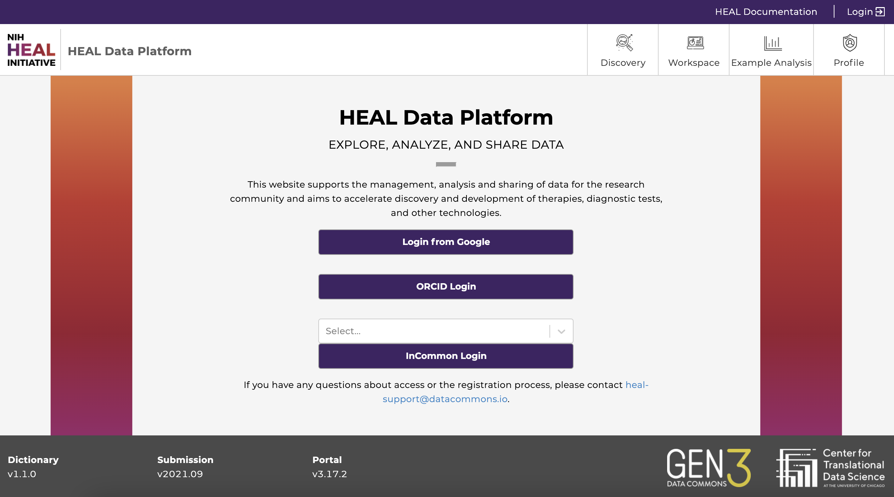

b) Login Page###
You will not need to log in in order to:
- Browse the study metadata on the Discovery Page
- follow along the pre-made tutorial notebooks in the “Example Analysis” tab
Click here to see all open-access studies.
You will need to log in and obtain authorization (access) in order to
- access studies with controlled data
- perform analyses in workspaces
- download data files and file manifests
- run interactive tutorial notebooks in workspaces
Start by visiting the login page (https://healdata.org/login).

Login Page of the HEAL Platform.
- Login from Google: You may login using any Google account credentials, or a G-suite enabled institutional email. This option may or may not be available depending on the institution or organization the user is associated with. Users should contact the IT support to verify if this option is available. For staff, students, and faculty of the University of Chicago, more information can be found here.
- ORCID Login: Users with an ORCID account can log in using their ORCID credentials.
- InCommon Login: Users can login with a participating institution that is federated by InCommon. Click on “Select...” to browse and choose the institution.
After successfully logging in, your username will appear in the upper right-hand corner of the page.